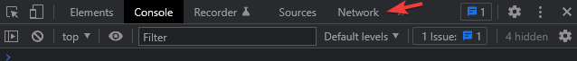

Web Programming
Andreas Dranidis
What is the World Wide Web and how is it related to the Internet?
- The Web is an application that runs over the Internet
- The Web was invented by Tim-Berners Lee at CERN in 1991
- The Internet is the physical network of networks of networks
Can you use the Internet without using the Web? What about vice-versa?
Client
Any computer on the network that requests services from another computer on the network
Server
Any computer that receives requests from client computers, processes and sends the output
Web page
Any page that is hosted on the Internet
Web client (Browser)
A program that retrieves information from the Web
Web server
- A program that waits for requests from web browsers
-
It provides four major functions
- Serving web pages
- Executes programs and returns output
- Controlling access to the server
- Monitoring and logging all access

What is the primary protocol that makes the Web work?
Hypertext Transfer Protocol (HTTP)
- uses one TCP connection on well-known port 80
- connections are established between two IP addresses
- an IP address is a unique identifier assigned to a device or domain that connects to the Internet
- two types of messages
- Request
- Response
Which are the primary languages of the Web?
Open your browser, press F12 and go to the Network tab. Try to spot any of the aforementioned stuff
